I’m Naga Venkata Sai "Ravi"teja Chappa — a researcher building computer-vision and multimodal-AI systems that decode group activity, healthcare, and social behavior signals. PhD from the University of Arkansas CVIU Lab, now bringing that work into pediatric autism research at CHOP.
As a Research Postdoctoral Fellow in Computational Approaches and Machine Learning at the Center for Autism Research, Children’s Hospital of Philadelphia, I work under Dr. Birkan Tunç on novel computational methods for autism research — translating advances in computer vision into clinical understanding of children.
I completed my PhD in Computer Engineering at the University of Arkansas (Jan 2021 – Feb 2025), advised by Prof. Khoa Luu in the Computer Vision & Image Understanding Lab. My dissertation, “Vision-Based Multimodal Approaches in Human Behavior Analysis,” bridged group activity recognition and healthcare monitoring.
My work spans visual temporal modeling, vision-language models, and foundational models, with publications at WACV, CVPR Workshops, Sensors, and IEEE Access. I previously earned an M.S. from Purdue (2020) and a B.Tech from JNTU-K (2018).
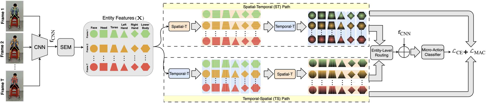
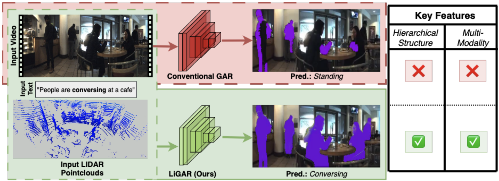
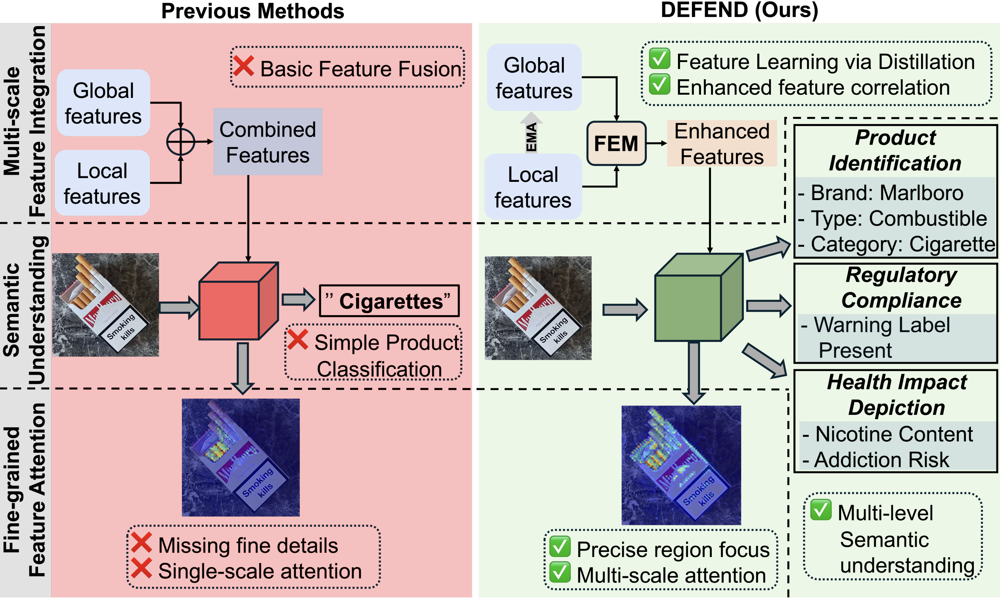
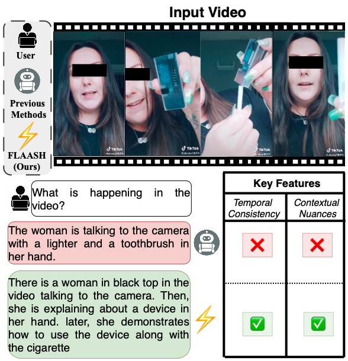
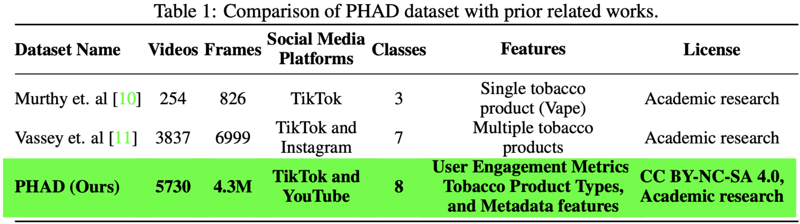
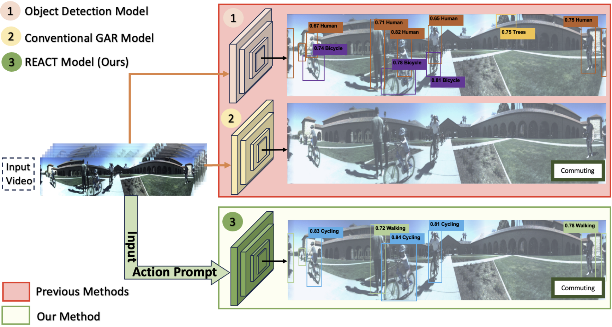
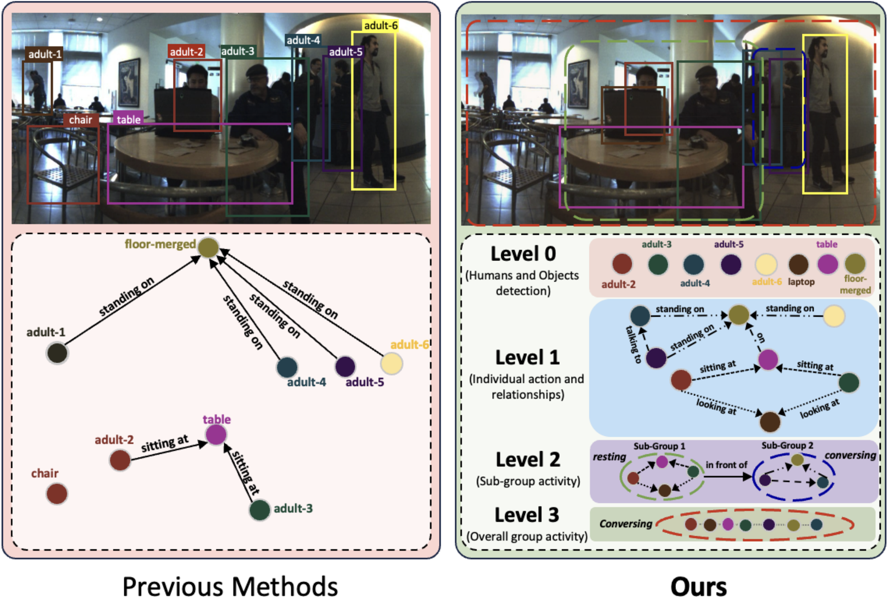
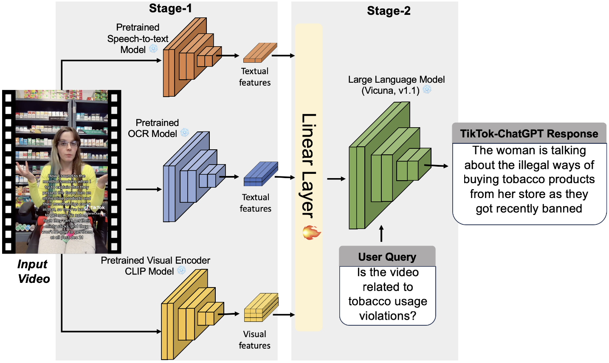
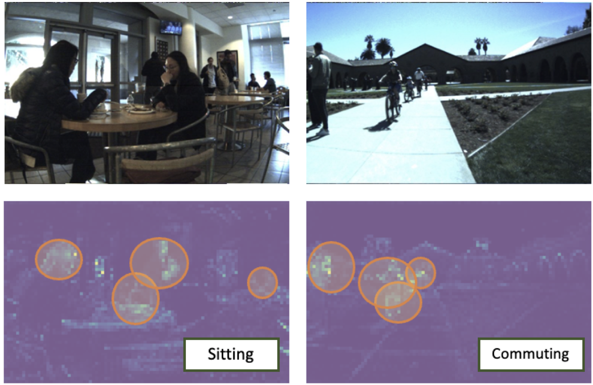
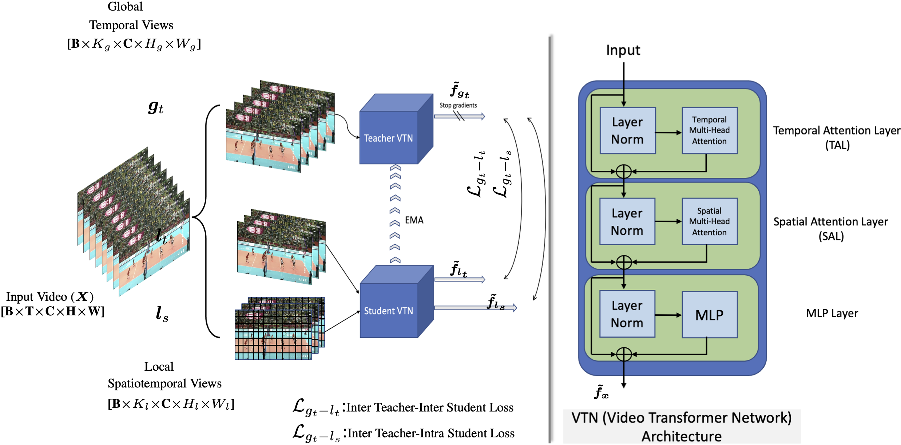
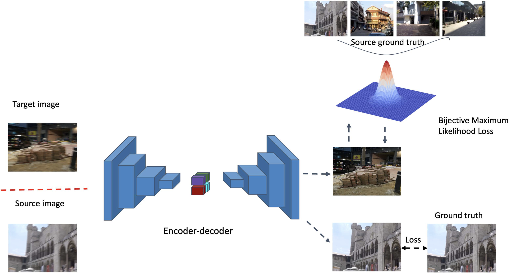
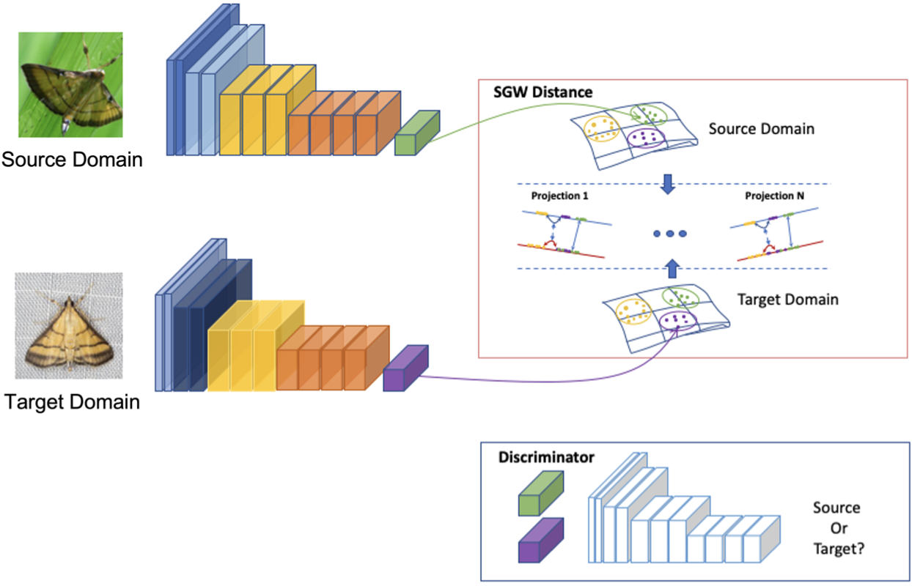
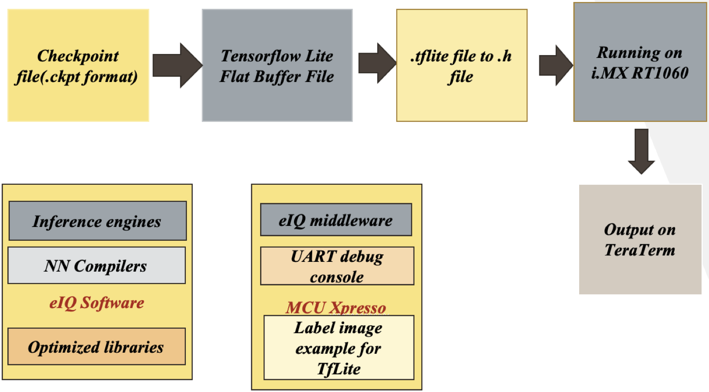
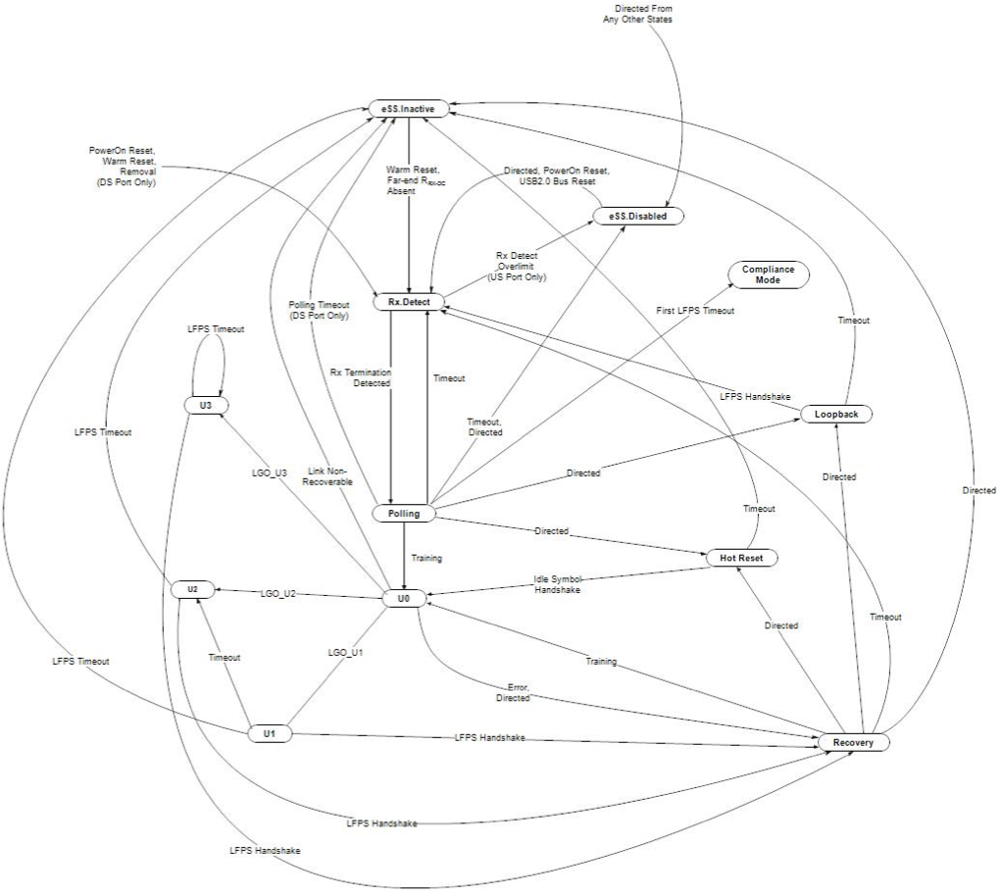